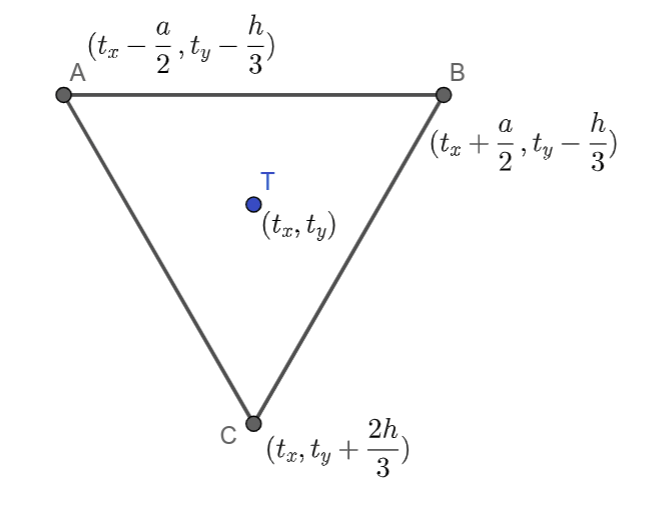

Час 6 - релативне координате - утврђивање¶
На прошлом часу смо се упознали са релативно задатим координатама и предностима тог механизма цртања. Утврдимо ово кроз још неколико примера.
Кућа - положај¶
Рецимо да сте написали овај програм, а циљ вам је да преправите програм тако да кућица може једноставно да се премешта:
Нека је главна тачка (сидро) (x, y) = (50, 150). Довршите
започето преправљање програма у пољу испод, у коме се цртање обавља у
функцији kuca(x, y, boja_zidova). Када се уверите да цртежи у
два програма изгледају исто (осим што су прозори различите величине),
замените позив kuca(50, 150, pg.Color("khaki")) са следећа 4,
да бисте добили слику као кад се кликне на дугме „Прикажи пример”:
kuca(150, 90, pg.Color(220, 220, 220))
kuca(220, 130, pg.Color("white"))
kuca(350, 160, (255,255,150))
kuca( 50, 150, pg.Color("khaki"))
Саобраћајни знак од једнакостраничних троуглова¶

Напиши програм који исцртава саобраћајни знак укрштања са путем са првенством пролаза који је у облику жутог једнакостраничног троугла са црвеном ивицом, окренутог тако да му је хоризонтална основица горе.
Ефекат троугла који је жуте боје и има дебелу црвену ивицу постићи ћемо тако што ћемо нацртати прво већи црвени троугао, а затим мањи жути троугао. Та два троугла ћемо поставити тако да им се тежишта (уједно и све значајне тачке) поклапају и да су идентично оријентисани.
Приликом цртања саобраћајног знака потребно је да одредимо поступак којим се црта једнакостранични троугао ако му је познато сидро постављено у тежиште \(T\) за које ћемо претпоставити да има координате \((t_x, t_y)\) и ако му је позната димензија (то може бити било дужина странице \(a\), било висина \(h\), јер се из једне од ових димензија друга једноставно израчунава на основу чувене везе \(h = \frac{a\sqrt{3}}{2}\), која се лако изводи применом Питагорине теореме на правоугли троугао чија је једна катета висина једнакостраничног троугла, друга половина странице, а хипотенуза је страница једнакостраничног троугла).
{kind=link}
Пошто, како из математике знамо, тежиште троугла дели тежишну дуж (у овом случају то је уједно и висина) у односу \(2:1\), координате темена \(A\) и \(B\) су у односу на ову тачку померене (транслиране) на горе за \(\frac{1}{3}h\), док је тачка \(C\) померена на доле за \(\frac{2}{3}h\).
Координате x ових тачака одређујемо у односу на тачку \(T\), односно дужину странице \(a\). Тачка \(А\) је померена од тежишта за \(\frac{а}{2}\) ка левој ивици прозора. Тачка \(В\) је померена од тежишта за \(\frac{а}{2}\) средину ка десној ивици. Тачка \(C\) се хоризонално налази на линији тежишта.
Дакле, тачка \(A\) има координате \((t_x-\frac{a}{2}, t_y-\frac{h}{3})\), тачка \(B\) има координате \((t_x+\frac{a}{2}, t_y-\frac{h}{3})\), док тачка \(C\) има координате \((t_x, t_y+\frac{2h}{3})\).
Пошто је потребно да нацртамо два троугла, можемо дефинисати функцију за цртање троугла и позвати је два пута (за исто тежиште, али различите боје и димензије). Тежиште ћемо поставити хоризонтално на средину прозора, док ћемо га вертикално поставити тако да троугао делује центриран по средини екрана. Оставићемо простор (маргину) од по 30 пиксела изнад и испод троугла, а тежиште троугла ћемо поставити тако да преосталу висину дели у односу 1:2.
На основу претходне дискусије допуни наредни програм.
Проблеми приликом израчунавања параметара кругова¶
Подсетимо се да за разлику од функција за цртање линија и
правоугаоника које примају и реалне аргументе, функција за цртање
кругова захтева да су координате центра круга и дужина полупречника
искључиво цели бројеви. Ово може довести до одређених проблема у
програмима у којима се ти аргументи израчунавају у програму. Када
видиш поруку TypeError: integer argument expected, got float, тада
знај да је проблем у томе што је функцији за цртање круга уместо целог
прослеђен неки реалан број и тај проблем можеш лако решити коришћењем
неког облика заокруживања бројева.
Зато ћемо често у задацима у којима цртамо кругове, за израчунавање
координата центара и полупречника кругова уместо реалног дељења
(оператора /) користити целобројно дељење (оператор //) или
ћемо користити заокруживање реалних бројева (функцијом round или
функцијом int).
Провери да ли ово разумеш тако што ћеш одговорити на наредно питање.
- Није наведен добар број параметара у позиву функције `pg.draw.circle`
- Покушај поново
- Координате центра не могу бити реални бројеви
- Тачно
- Редослед параметара у позиву није исправан
- Покушај поново
- Полупречник круга не сме да буде негативан број
- Покушај поново
- Потребно је навести још дебљину кружнице
- Покушај поново
Q-83: Након позива pg.draw.circle(prozor, boja, (x, y), r) пријављена је грешка TypeError: integer argument expected, got float. Шта може бити узрок те грешке?
Наредни програм црта цвет састављен од кругова, али не ради исправно и твој задатак је да га поправиш.
Цвет¶
Напиши програм који исцртава цвет који се састоји од централног жутог круга пречника 100 пиксела, око којег се налази 6 правилно распоређених латица розе боје, свака у облику круга, такође пречника 100 пиксела (центри латица се налазе у теменима правилног шестоугла, чији је центар у центру цвета, а дужина странице је 100 пиксела).
{kind=link}
За цртање круга потребно је знати координате центра и дужину полупречника круга. Пречник свих кругова је једнак, самим тим и полупречник \(r = \frac{a}{2}\). Нека је тачка О центар жутог, централног круга. Координате ове тачке означимо са \((c_x, c_y)\). Ова тачка се налази у центру прозора и њене координате једнаке су половини висине, односно ширине прозора. Координате осталих центара кругова изразићемо такође преко координата \((c_x, c_y)\) . Координате тачке \(А_1\) означимо са \((x_1, y_1)\). Тачка \(А_1\) је за \(a\) померена (транслирана) од тачке О по оси \(x\), тако да је \(x_1\), прва координата ове тачке једнака \(x_1 = c_x + a\), а друга координата ове тачке \(y_1\) једнака је \(y\) координати тачке О, тј. \(y_1 = c_y\). Координате тачке \(А_2\) означимо са \((x_2, y_2)\). Ова тачка је у односу на тачку О померена (транслирана) за \(\frac{a}{2}\) по оси \(x\), односно за висину \(h = \frac{a \sqrt{3}}{2}\) једнакостраничног троугла \(\triangle OA_1A_2\) по оси y. На основу овога закључујемо да су координате тачке \(А_2\), \((x_2, y_2) = (c_x+\frac{a}{2}, c_y + h)\). Координате центра осталих кругова одређујемо на сличан начин.
На основу претходне дискусије, допуни наредни програм и поправи грешке везане за тип података бројева.